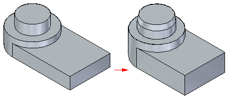
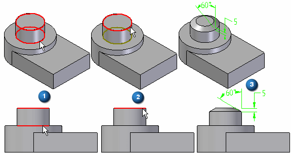
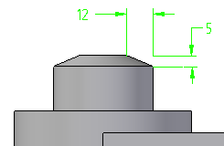

Chamfer Unequal Setbacks command
Use the Chamfer Unequal Setbacks command to construct a chamfer along selected edges of a part using unequal setbacks.

Chamfers with unequal setbacks do not maintain a chamfer definition that can be edited.
Chamfer feature workflow
When you select the Chamfer Unequal Setbacks command, the command bar guides you through the following steps:
-
Face Selection Step—Defines the faces from which you want to measure the setbacks or chamfer angle.
-
Edge Selection Step—Defines the edges you want to chamfer.
-
Preview Step—Processes the input and displays the feature.
-
Finish Step—Finishes the feature.
Angle and setback chamfers
When constructing a chamfer feature using the Angle and Setback option, you must first select a face (1), and then select the edges you want to chamfer (2). The value you type in the Setback box on the command bar is applied along the selected face and is measured from the selected edge. For example, a 5 millimeter setback and 60 degree angle chamfer is applied as shown (3).

Two setback chamfers
When constructing a chamfer using the 2 Setbacks option, you also must select a face first. The value you type in the Setback 1 box is applied to the face you select, and the value you type in the Setback 2 box is applied to the adjacent face. As in the earlier example, if you select the cylindrical face and the circular edge at the top of the part, and then specified a Setback 1 value of 5 millimeters, and a Setback 2 value of 12 millimeters, the 5 millimeter value is applied along the cylindrical face, and the 12 millimeter value is applied along the planar face on the top of the part.

How do I
Construct a chamfer featureEdit or move a chamfer
Construct a chamfer with equal setbacks
Construct a chamfer with unequal setbacks
Learn more
Adding chamfers to part edgesLook up more details
Chamfer command (feature)Chamfer command bar (ordered)
Chamfer command bar (synchronous)
Chamfer Options dialog box (ordered)
Chamfer Options dialog box (synchronous)
Chamfer Equal Setbacks command
Chamfer Unequal Setbacks command bar